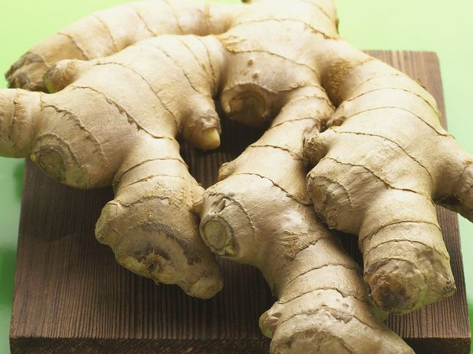
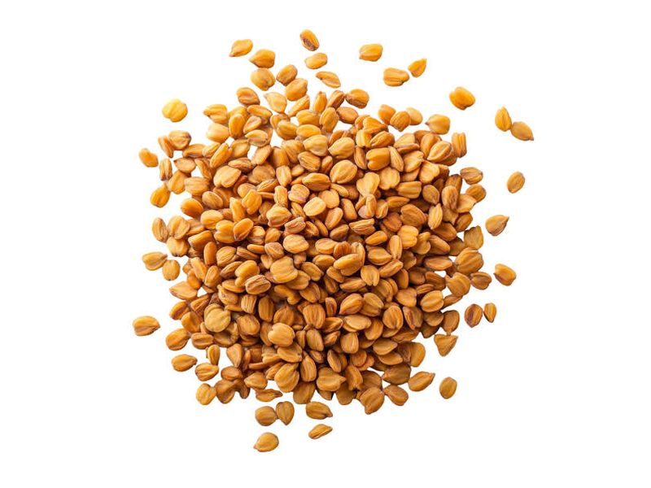
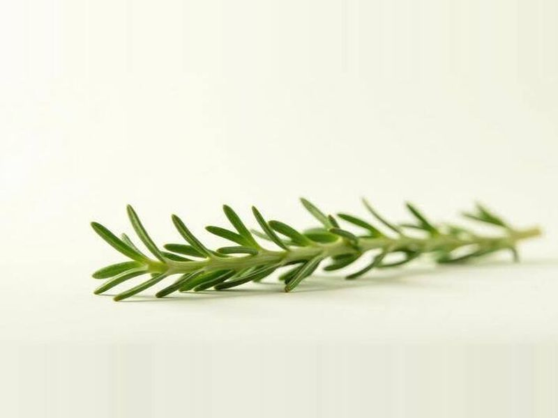
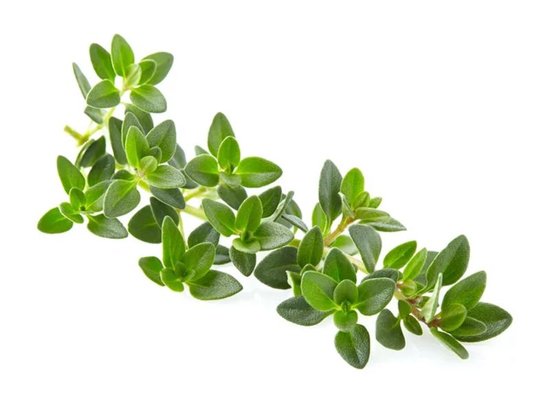
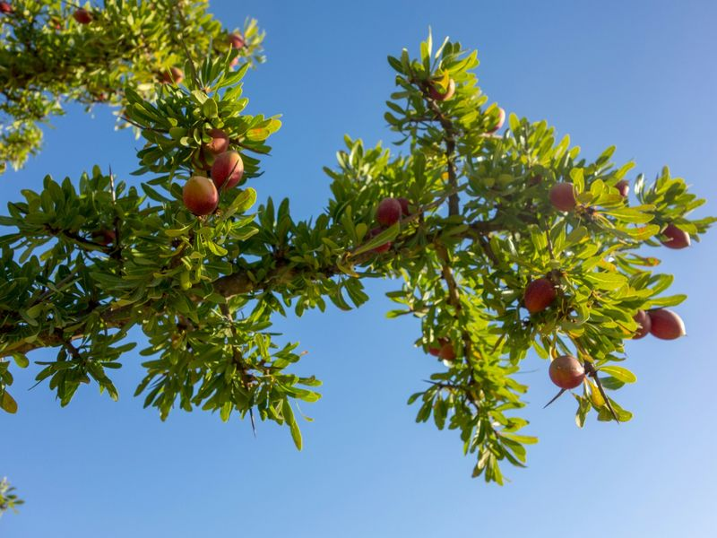

Fiche disponibleالبطاقة متوفرة
Curcuma
Curcuma longaالكركم · خرقومÉpice jaune très utilisée au Maroc, étudiée dans plusieurs maladies rhumatismales.
تابل أصفر شائع في المغرب، دُرس في عدة أمراض روماتيزمية.
Lire la ficheاقرأ البطاقةBientôtقريباً

Gingembre
Zingiber officinaleالزنجبيل · سكنجبيرBientôtقريباً

Fenugrec
Trigonella foenum-graecumالحلبةBientôtقريباً

Romarin
Rosmarinus officinalisإكليل الجبل · أزيرBientôtقريباً

Thym
Thymus vulgarisالزعترBientôtقريباً

Argan
Argania spinosaالأركانFiches en préparation
بطاقات قيد الإعداد
Ortie
Urtica dioicaالقراص · الحريكةAloès
Aloe veraالصبارHenné
Lawsonia inermisالحناءLavande
Lavandula angustifoliaالخزامىFiguier de Barbarie
Opuntia ficus-indicaالهنديةAucune plante ne correspond à votre recherche.لا توجد نبتة تطابق بحثك.